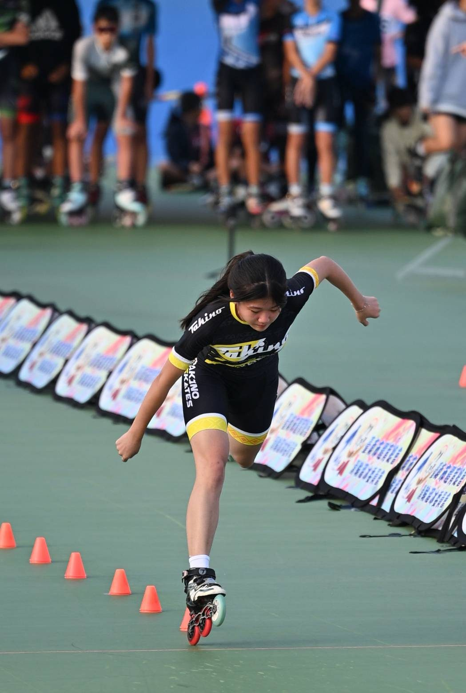
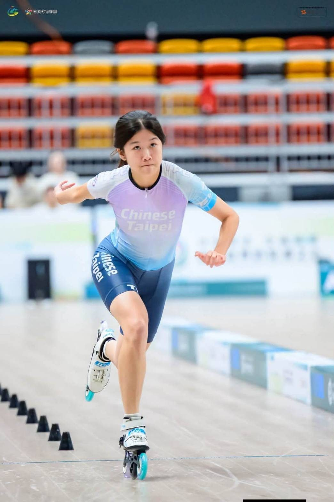

01我的故事
初遇直排輪，是在幼兒園的課後班。
看著同伴自在地在地面滑行，心裡滿是羨慕與喜歡。只是當時的自己很「秀皮（怕痛）」，但對跌倒的恐懼，終究敵不過風從臉龐掠過的自由感，也因此開啟了我的滑輪人生。
小時候學習速度很快，國小時期陸續參加各類賽事，成績越來越好，成就感也越來越大。然而隨著年齡增長，比賽強度也越來越高。在追求競賽成績的同時，也慢慢進入青春期。國中階段，生理與心理變化劇烈，加上學業壓力，學科與術科狀態起伏不定。有長達一年的時間，比賽成績始終不理想，長期失利逐漸失去自信與目標，也影響了平時訓練，形成惡性循環。
會考後進入嘉義女中就讀，這段低潮才慢慢走出來。那段期間，許多教練與前輩認為訓練不足，建議增加訓練量、重訓、增肌；而爸爸則參考許多運動科學案例，例如澳洲泳將麥克沃伊從「多練」轉向「少練但更有效率」的模式，搭配其它運動訓練，均衡身體協調性、平衡感與爆發力，反而將專項訓練降低為每週兩次，堅持不過度訓練，只希望在成績不佳的時期，依然能夠保留更多可能性。
高中之後，因為學校自由的學風，大家都能在課業之外發展自己真正熱愛與擅長的領域，讓一度幾乎放棄的滑輪溜冰，又慢慢回到了我的生活裡。
不知不覺中，隨著生理逐漸穩定、技術日益成熟、心理素質也更加堅韌，高二開始陸續拿下多項全國賽事獎牌。
歷經三年兩度國手選拔失敗後，今年在新教練陳貝怡的指導下重新出發，終於成功取得115年滑輪溜冰青年女子組國手資格。
這一路走來，式晴除了感謝亦師亦友的陳貝怡教練，也感念所有一路陪伴、幫助、鼓勵她的每一位貴人、教練、隊友與同伴。也慢慢理解，成長不是一路往前衝，而是在跌倒、懷疑與低潮之後，仍願意再次站上起點。
今年將代表國家參加2026世錦賽，期許自己滑進夢想，也滑出屬於自己的光。

